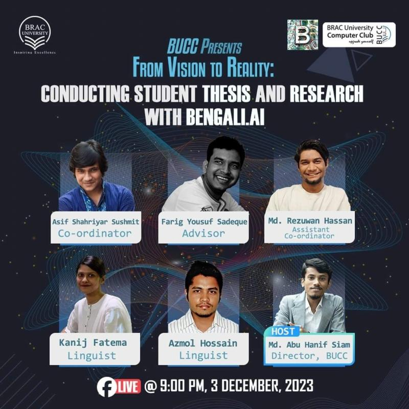
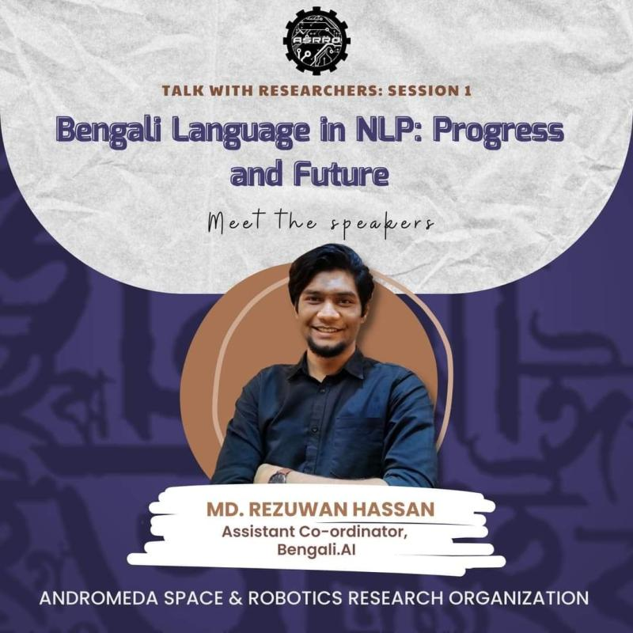

Talks
Invited talks, panel discussions and webinars — mostly on Bangla NLP and speech recognition for regional dialects. Hands-on workshops now live on the teaching page.
AI Research & Academic Development Webinar
Invited to speak at a webinar organised by the BRAC University Computer Club on AI, Bangla NLP, and the importance of doing impactful research.
A large part of the session was practical advice for undergraduates: how to pick a thesis topic that is both tractable and worth doing, how to read a research area before committing to it, and how to turn a thesis into a publishable contribution.

Talk with Researchers — Bengali Language in NLP
Invited to speak at a webinar on AI and Bangla NLP organised by the Andromeda Space & Robotics Research Organization from CUET.
Topics included how Bengali phonology and morphology complicate speech and text modelling, and how students can get started contributing to Bangla NLP research.

Open-Source Linguistic Initiatives for Bangla — Ministry of Foreign Affairs
Invited to talk about multiple open-source linguistic project initiatives and to represent Bengali.AI to the Ministry of Foreign Affairs of Bangladesh.
The talk framed Bangla NLP as national digital infrastructure — covering the speech, dialect and IPA-transcription corpora being built in the open, and why publicly released resources matter for a language still treated as low-resource by mainstream foundation models.


AI Symposium — Exploring Bangla NLP with Bengali.AI
Invited as a speaker for a symposium on Bangla NLP organised by Tech Topia.
The session covered the state of Bengali as a low-resource language, the open-source datasets and tooling Bengali.AI has released to close that gap, and where new contributors can plug into ongoing Bangla speech and text projects.